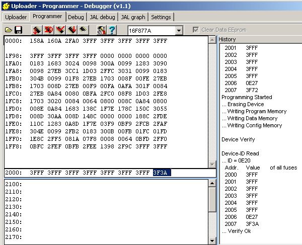
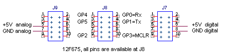
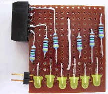
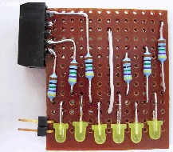
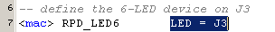

july 2005
PIC Rapid Prototyping Board
Introduction
Up till now I mostly used a breadboard (and/or simulation) for PIC prototyping. For simple designs, with just a few sensors / actuators this method is quite adequate. For larger designs a breadboard is not the most optimal tool. I've looked for commercial available prototyping boards, but none of them fits my needs. Therefor I designed a PIC prototyping board, on a simple veroboard, that hopefully does fit my needs.
This is not meant as some kind of universal bus-system (although it may look like), but a prototyping system to test functional designs that will be realized as a stand alone system (with 1 PIC) and to develop and test the software during the time the real printed circuit board is being produced.
June 2006: After using the board for about a year, building dozens of applications on it, just finished the assembly of a batch of 15 boards, I only can say it's really a "RAPID" and it's really "PROTOTYPING" !!
The final board not only contains the normal RPD connectors, but also contains 4 Dwarf (TM from Voti) connectors, which extends the use of the RPD with all Dwarf devices.
Below on the left a detail of the USB interface, based on K-USB-2-232 from Voti, on the right details of the RS232 interface, based on a MAX232 chip. The USB version has the main advantage, that it can draw up to 0.5 A of current from the USB bus, so you need no extra power supply. The disadvantage of the USB interface it has a higher price (17 Euro, against about 3 Euro for the RS232). Another (small) advantage of the USB interface are: you can use Baudrates up to 1.25 MBaud.
For new designs it's far more better to fit a FT232RL right into the board. This USB chip contains all components of the K-USB_1 board and costs only 9 Euro.
Beware that there are different versions of the K-USB-module, with exchanged Rx and Tx !!
PCB
My (first) PCB has a few errors. If you're using USB interface you can use the original layout (just 1 wire extra), if you want to use the serial connection, you might want to correct the PCB layout. Also the position of the connectors J8 and J9 is exchanged, but that doesn't harm.
Version 1: The schematic and PCB layout in Eagle format of the original design can be found here ...
Version 2: The corrected schematic and the not finished PCB layout can be found here ...
To control the connection of the different grounds, I had them manually connected with a short circuit at the right place. Unfortunately I forgot the ground of the 12/24 V. So to correct, you need to add one wire.
The second error occurred when using the MAX232 which I never used, the TTL side and RS232 side were exchanged. (So never design a PCB with components you've never used ;-)
This modification is only needed when you need the RS232 interface.
Cut the lines (with a sharp m=knife) as shown in the pictures below
And add the 6 wires shown in the picture below
Loading the bootloader
I would suggest the Tiny bootloader.
For the 16F877A, the config word should be 3F3A, as shown in the picture below.

14-5-2006
programmer module is started, with just a few components on the module board, we build a universal PIC programmer completely in JAL.
Driginal esign Goals
Device Connector
The choice of the connector is an important choice. A too large connector spills too many IO-pins, in the case of many small sensors / actuators. A too small connector makes it difficult to connect a device with many IO-pins. Therefor a good compromise seems to be the following solution:
|
black = 10 = A0 white = 9 = A1 gray = 8 = analog ground purple = 7 = digital ground blue = 6 = analog +5V green = 5 = digital +5V yellow = 4 = B0 orange = 3 = B2 red = 2 = B1 brown = 1 = B3 |
A0 = black A1 = white Agnd = gray Dgnd = purple A+5V = blue D+5V = green B0 = yellow B2 = orange B1 = red B3 = brown |
I've chosen a 10-pins connector, that contains 4 digital IO-pins, 2 analog/digital pins. Half of the signals is shared with the connector on the left, the other half is shared with the connector on the right. With the above arrangement you can either use the full connector (making all the pins available) or just the left or the right part of the connector (making just 2 digital IO-pins and 1 analog/digital IO-pin available.
The connector is a ML10 connector (flatcable connector), which gives the possibility to either plug in the device-board directly or connect the device-board with a standard flat-cable.
To get reasonable analog performance, each connector contains analog and digital ground / power supply.
I also considered to add 3 or 4 extra connectors, compatible with dwarf boards, but I couldn't find the space for it.
PIC connector
The PIC connector consists of a 40-pins WDIP-connector, in which an 8-pins DIP-connector and a 28-pins DIP-connector are mounted. So 12F675 and 16F87x can be mounted directly into the sockets. I haven't figured out yet how to connect 16F8x and 16F81x PIC-devices.
The Xtal is mounted on a header, so it can be exchanged easily.
For the 12F675 a low voltage program header is mounted on the left (all other planned PIC-devices have bootloader capabilities). LVP should also be possible through the standard USB interface, but I don't have any software for using the FTDI chip as a programmer.
I really doubt if all these connectors are of much use. Why not always develop on the largest PIC: 16F877 ? With the posibility of changing the Xtal easy and the flexibility of JAL in pin-swapping, down-scaling is always very easy.
USB-interface
For the USB interface I've chozen Wouter's K-USB-1 module. This module has an FTDI chip + additional eeprom. The eeprom is needed to allow multiple boards connected to your PC and allowing to draw more than 100 mA from the USB-bus. In combination with a modified Shane Tolmie's bootloader this makes a perfect combination, with following functionalities:
The USB-module is connected to the rest of the module through a jumper box, so you can easily select which signals from the USB will be used on the board.
This part also shows the power supply, with the split analog and digital powers. The splitting is done to get the optimal performance for the analog inputs. The analog and digital ground should be physical connected at or close to the PIC-pins. The capacitors should not be chozen too large (10uF), because each device will have additional capacitors on it (and distributed capacity is better).
The outgoing signals from the USB module (TxD and DTR) have an series resistor of 180 Ohm as an extra protection to short-circuiting.
At the bottom of this diagram, the reset circuit is shown.
Device Bus
Below is the schematic of the total bus and a picture of the total board. It's advisable to use the extra (dummy) 12V header on every device board, because it gives the device-board extra mechanical stabilty.

Quick Reference 16F877
Quick Reference 12F675

Serial Comm / Bootloader
If serial communication and/or bootloader is used, the odd row of J7 and the even row of J8 (shaded purple area) are not available for other purposes. In fact this area always contains the special reset pin (MCLR). For normal use it's best to block these parts of the connectors, by plugging in a dummy connector, as shown on the photo below.
The bootloader source is a slightly modified version of Shanie's 62019 - bootldr-v26-16F876-77-20Mhz-19200bps.hex. You have to change the configuration word to turn LVP off and thereby gaining the normal use of RB3 ( 2007: 3FB2 ==> 3F32). Bootloader_IDSPON_16F87x_20MHz_19200Baud.hex

SPI-bus
The SPI-bus is completely available at J6. Connector J6 has besides the SPI-bus, 1 extra pin available for selection of the SPI device. So SPI device boards should have some kind of cascading possibilities.
If SPI is used, the odd row of J5 and the even row of J7 (green shaded area) are not available for other device boards.
Example of RPD-device
Here a very simple device is shown, containing 6 LEDs and thereby consuming a whole connector. This device can serve as a general purpose test device, and is here used as an example, to show that part of the power of the rapid prototyping board lies in the software.
The connector used here as the female part from a flatcable connector, not ideal, but it works. Print connectors of this type are hard to get, possible Farnell: 973-658, is the only more or less suitable connector I found. So maybe the ML10 is the wrong choice after all ?
 

By changing just 1 character in the software, a walking LED can be set on any of the connectors of the rapid prototyping board. Unfortunatly this cann't be done in plain JAL, you've to use some macro-capable preprocessor like JALcc to get hold of this ultimate power. The JAL code below explains itself, you only have to change line 7 to place the walking LED on another connector.
The software power comes from the macro expansion,
below, on the left the JALcc macro call, and on the right the expanded macro code:
 
If you've a rapid prototyping device, just send me the code and I'll implement a macro in JALcc.
And to complete the examples, lets take a look how simple it's to connect a real life example
Future Improvements